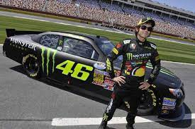
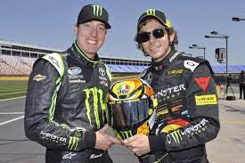
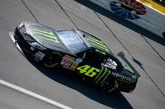

O curioso teste de Valentino Rossi na Nascar

Valentino Rossi não prescisa de apresentação, multicampeão do mundo das motos, com inúmeras vitórias e pódios na classe madrinha das motos a MotoGP, desde muito jovem ja estava mostrando que tinha nascido pra correr em praticamente tudo que tenha rodas, e foi assim que ele conseguiu seu sucesso no mundo, dentro disso ele fez alguns teste dentro no automobilismo incluindo na Nascar.

E la em 2013, em uma ação patrocinada pela emppresa de energeticos Monster, que também patrocinava um dos melhores pilotos dessa década, o bicampeão Kyle Busch, então Rossi foi la no oval de Charlotte testar um carro da nascar xfinity.

Nas primeiras voltas Rossi estavam fazendo voltas para aprender como o carro de comportava e pegando a confiança dele, depois que ele aprendeu como o carro se comportava e pegou a confiança, Rossi começou a andar na casa de 300K/H e conseguiu fazer voltas competitivas, segundo Kyle Busch o Rossi fez voltas que colocariam ele no top 15 no grid da Xfinity daquele ano, um otimo resultado pra alguém que não tinha experiencia nenhuma em uma carro da nascar.
E foi isso, espero que tenha gostado e se vemos na proxima.